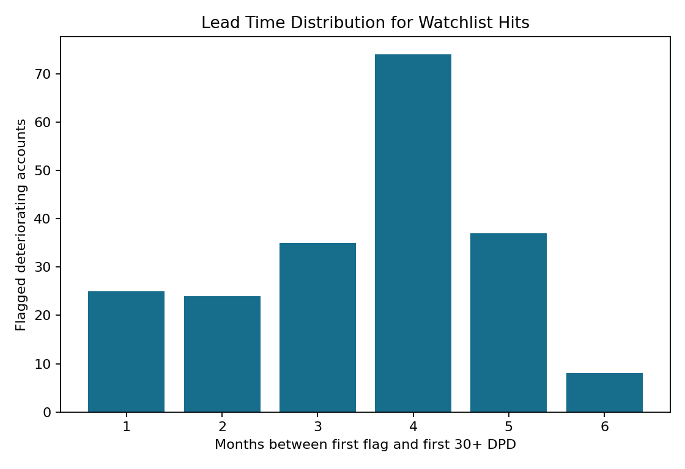
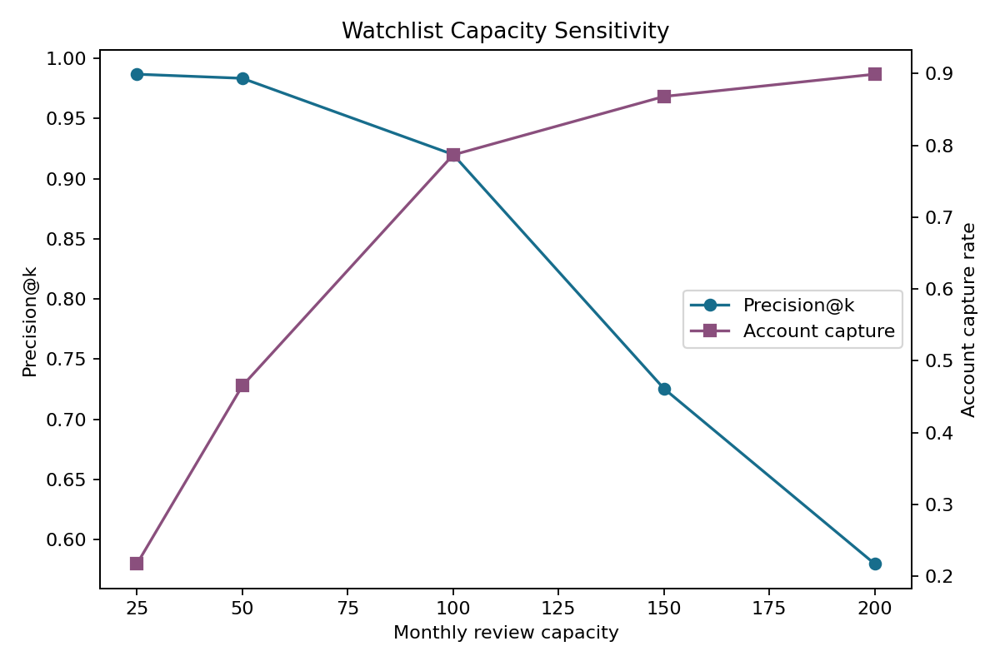
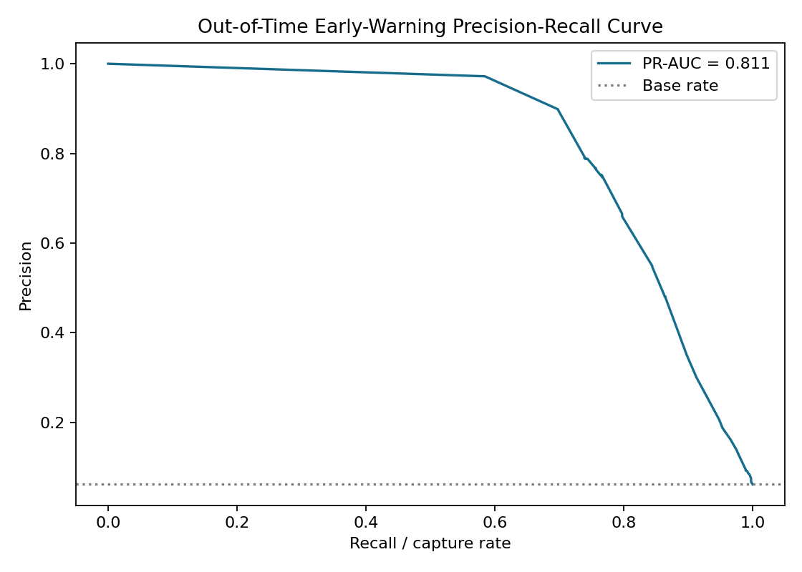
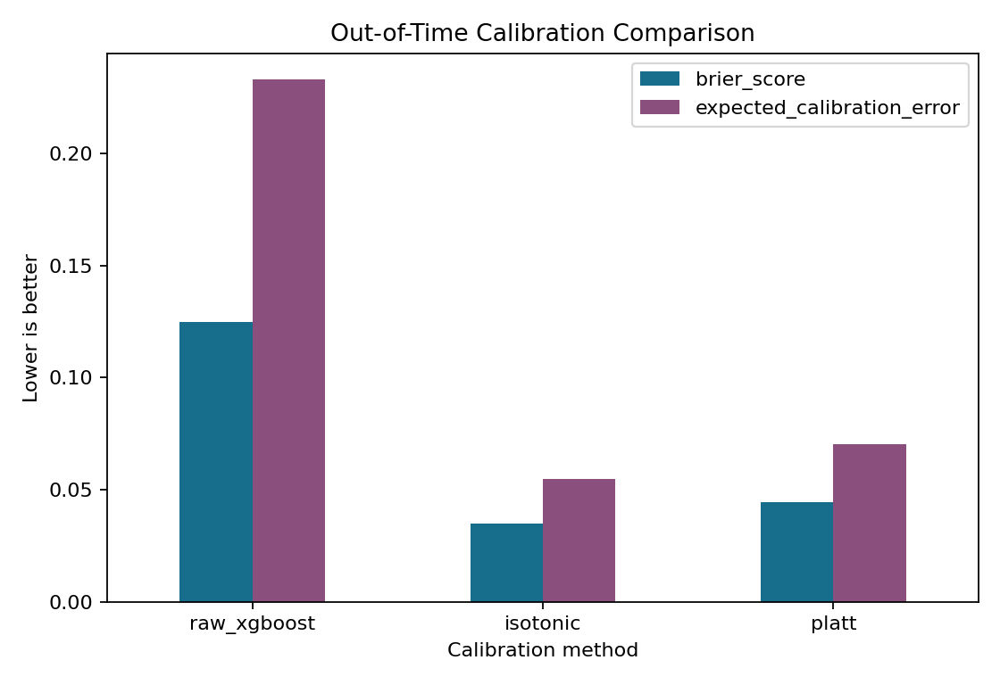
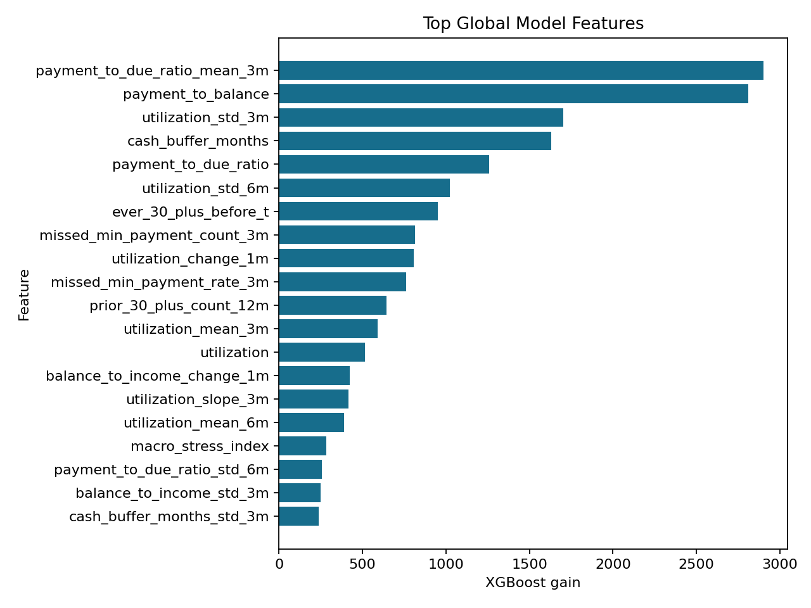
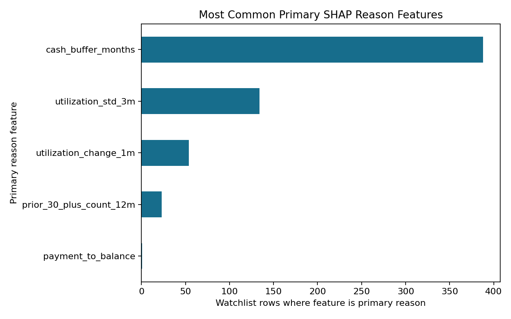
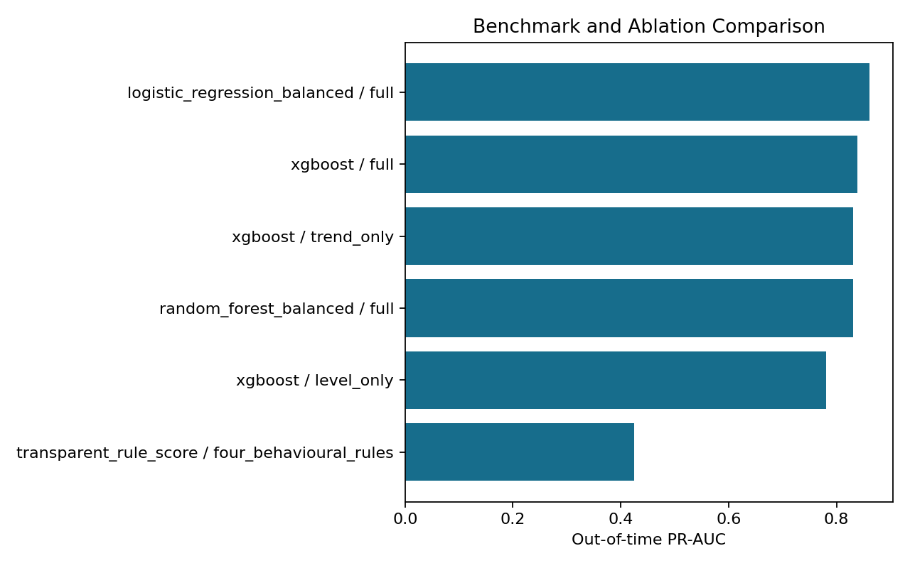
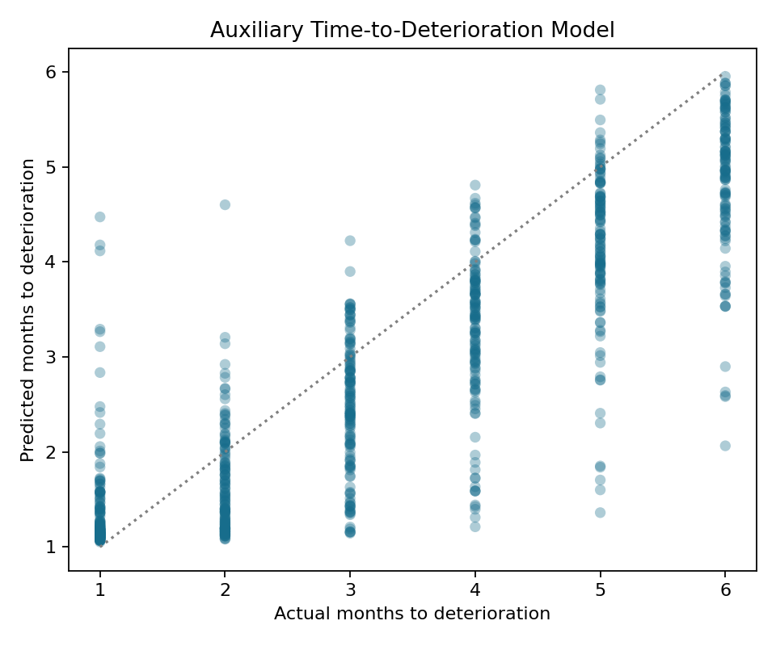

Headline Result
The out-of-time test watchlist flags deteriorating accounts a median of 4.0 months before first 30+ DPD. At a review capacity of 100 accounts per month, it captures 203 of 258 deteriorating accounts with 92.00% precision.
| Test period | Rows | Positive rows | Base rate | ROC-AUC | PR-AUC | Brier |
|---|---|---|---|---|---|---|
| 2022-01-31 to 2022-06-30 | 13,440 | 835 | 6.21% | 0.9597 | 0.8107 | 0.0350 |
Lead-Time Distribution

Capacity Sensitivity

Precision-Recall

Calibration Comparison

Feature Importance

Reason-Code Frequency

Benchmark & Ablation
Balanced logistic regression is the strongest benchmark on this synthetic panel. The trend-only XGBoost ablation preserves most of the full model's PR-AUC, supporting the thesis that behavioural direction and volatility carry the early-warning signal.

Time-To-Event Add-On
Auxiliary positive-case model: MAE 0.723 months and median absolute error 0.561 months. This is not a full censored survival model, but it extends the fixed-horizon classifier toward timing.

Top Watchlist Sample With Reason Codes
| Month | Rank | Account | Probability | Hit? | Lead time | Primary reasons |
|---|---|---|---|---|---|---|
| 2022-01-31 | 1 | ACC000013 | 1.000 | Yes | 1 mo | Thin cash buffer; elevated utilisation volatility; weak payment relative to balance. |
| 2022-01-31 | 2 | ACC000074 | 1.000 | Yes | 2 mo | Elevated utilisation volatility; thin cash buffer; recent utilisation increase. |
| 2022-01-31 | 3 | ACC000126 | 1.000 | Yes | 2 mo | Thin cash buffer; elevated utilisation volatility; weak payment relative to balance. |
| 2022-01-31 | 4 | ACC000132 | 1.000 | Yes | 1 mo | Thin cash buffer; elevated utilisation volatility; recent utilisation increase. |
| 2022-01-31 | 5 | ACC000150 | 1.000 | Yes | 1 mo | Thin cash buffer; elevated utilisation volatility; recent utilisation increase. |
Full watchlist with SHAP reason codes is available in
reports/tables/watchlist_reason_codes.csv. The dashboard is static and uses committed
artifacts only, so it can be opened without running Python.